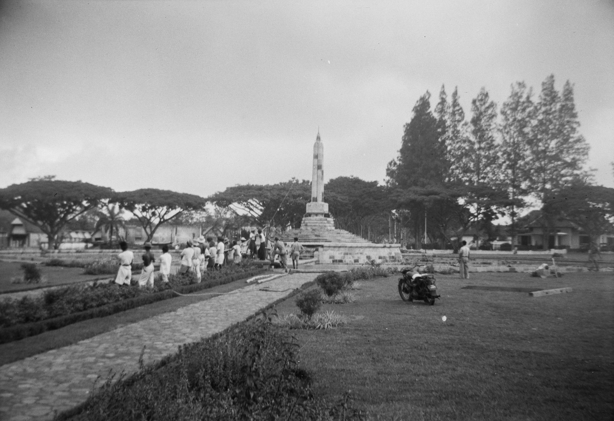

Sejarah
Malang Kucecwara sejatinya merupakan nama lengkap Kota Malang. Arti Malang Kucecwara adalah Tuhan yang akan membantu kita menaklukkan yang bathil (jahat). Perubahan nama menjadi Malang dilatarbelakangi oleh sejarah di masa Mataram Islam. Dilansir dari laman Kebudayaan.kemdikbud.go.id, Sultan Agung sebagai raja (1613-1645) yang masyur dari Mataram berupaya untuk menaklukkan seluruh Pulau Jawa. Dia pun turut menyasar Surabaya sebagai pusat dari Jawa Timur.
Usaha Sultan Agung sebagai penakluk dimulai dengan menundukkan kota-kota di sekeliling Surabaya terlebih dahulu. Salah satunya Malang. Demi mewujudukan hal itu, Sultan Agung pun mengutus 300 pasukan. Tumenggung Alap-Alap, yang memimpin jalur tengah lewat daerah Ngantang, mengalami kendala. Saat hendak memasuki daerah Malang, pasukan pimpinan Tumenggung Alap-Alap dihalangi ribuan pohon tumbang. Pohon-pohon yang tumbang menutupi jalur masuk menuju Malang. Meski telah berhasil membersihkan pohon tersebut, pasukan Mataram masih dihadapkan oleh perlawanan dari pasukan daerah Malang pimpinan Bupati Malang, yaitu Ronggosukmo.
Perlawanan Ronggosukmo terhadap serangan Mataram rupanya cukup kuat. Bahkan, pada akhirnya, mereka mampu mempertahankan daerah Malang, kendati membawa pasukan yang relatif lebih sedikit. Di sisi lain, pasukan Mataram pun mampu diatasi dengan mudah. Peristiwa tersebut menginspirasi penamaan Kota Malang, yang dapat diartikan sebagai penghalang atau menghalang-halangi. Sementara itu, pada masa kolonial Belanda, Kota Malang termasuk salah satu titik dari modernisasi di tanah Hindia Belanda. Melansir laman Pemerintah Kota Malang, tonggak tersebut ditandai dengan beroperasinya kereta api di Kota Malang mulai tahun 1879.
Perkembangan di Kota Malang pun mulai pesat, seperti dari aspek tata kota dan perubahan fungsi lahan. Herman Thomas Karsten menjadi sosok yang dipercaya terlibat dalam penataan ruang Kota Malang. Latar belakang Karsten yang seorang arsitek membuat dirinya ditunjuk sebagai penasihat perencanaan Kota Malang pada 1929. Bouwplan I-VIII menjadi program yang melibatkan Karsten secara aktif. Program itu salah satunya menyiapkan antisipasi perkembangan hingga 25 tahun ke depan. Adapun karya dari Herman Thomas Karsten antara lain Ijen Boulevard, yang kini jadi landmark heritage Kota Malang.
Berakhirnya kekuasaan pemerintah Hindia Belanda membawa Kota Malang ke dalam periode baru dalam waktu yang singkat. Mulai 8 Maret 1942, Malang diduduki oeh Jepang. Tiga tahun berselang, tepatnya 21 September 1945, Malang pun masuk ke dalam wilayah Republik Indonesia. Sempat diduduki kembali oleh Belanda pada 22 Juli 1947, Malang kembali ke pangkuan Indonesi pada 2 Maret 1950. Malang pun akhirnya dikenal sebagai salah satu dari apa yang disebut Malang Raya, mencakup kota Malang sendiri, kemduian Kota Batu, serta Kabupaten Malang. Mereka membentuk kesatuan wilayah sebagai pusat aktivitas sosial, ekonomi, budaya, hingga wisata.